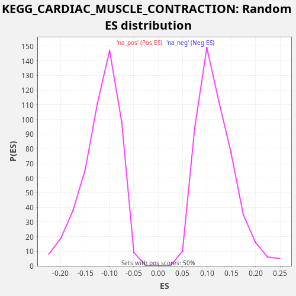

Profile of the Running ES Score & Positions of GeneSet Members on the Rank Ordered List
The same image in compressed SVG format
| Dataset | rnk |
| Phenotype | NoPhenotypeAvailable |
| Upregulated in class | na_pos |
| GeneSet | KEGG_CARDIAC_MUSCLE_CONTRACTION |
| Enrichment Score (ES) | 0.28135812 |
| Normalized Enrichment Score (NES) | 2.376157 |
| Nominal p-value | 0.0 |
| FDR q-value | 0.004136878 |
| FWER p-Value | 0.04 |
| SYMBOL | RANK IN GENE LIST | RANK METRIC SCORE | RUNNING ES | CORE ENRICHMENT | |
|---|---|---|---|---|---|
| 1 | ATP1A4 | 8 | 96.070 | 0.0185 | Yes |
| 2 | CACNA1D | 271 | 5.888 | 0.0243 | Yes |
| 3 | TNNC1 | 385 | 4.148 | 0.0375 | Yes |
| 4 | COX4I1 | 759 | 1.539 | 0.0377 | Yes |
| 5 | COX5B | 1090 | 0.866 | 0.0402 | Yes |
| 6 | CACNG6 | 1298 | 0.630 | 0.0487 | Yes |
| 7 | UQCRC2 | 1345 | 0.591 | 0.0653 | Yes |
| 8 | ATP2A2 | 1449 | 0.502 | 0.0790 | Yes |
| 9 | UQCRQ | 1897 | 0.300 | 0.0756 | Yes |
| 10 | COX7B | 2062 | 0.256 | 0.0862 | Yes |
| 11 | ATP1B3 | 2169 | 0.229 | 0.0998 | Yes |
| 12 | UQCR10 | 2246 | 0.216 | 0.1149 | Yes |
| 13 | COX5A | 2303 | 0.207 | 0.1310 | Yes |
| 14 | COX8A | 2471 | 0.175 | 0.1415 | Yes |
| 15 | UQCRB | 2597 | 0.157 | 0.1541 | Yes |
| 16 | TPM3 | 2599 | 0.157 | 0.1730 | Yes |
| 17 | ATP1B1 | 3173 | 0.096 | 0.1632 | Yes |
| 18 | UQCRFS1 | 3195 | 0.094 | 0.1810 | Yes |
| 19 | CACNA1C | 3359 | 0.083 | 0.1918 | Yes |
| 20 | CYC1 | 3438 | 0.077 | 0.2068 | Yes |
| 21 | COX6B1 | 3756 | 0.061 | 0.2098 | Yes |
| 22 | SLC9A1 | 4222 | 0.042 | 0.2055 | Yes |
| 23 | MT-CO2 | 4416 | 0.036 | 0.2147 | Yes |
| 24 | COX7C | 4616 | 0.031 | 0.2237 | Yes |
| 25 | COX6A1 | 4653 | 0.030 | 0.2407 | Yes |
| 26 | UQCRH | 4689 | 0.028 | 0.2578 | Yes |
| 27 | COX6C | 4736 | 0.027 | 0.2744 | Yes |
| 28 | UQCRHL | 4976 | 0.022 | 0.2814 | Yes |
| 29 | MT-CO3 | 6009 | 0.009 | 0.2487 | No |
| 30 | MT-CYB | 6293 | 0.007 | 0.2535 | No |
| 31 | MT-CO1 | 6463 | 0.006 | 0.2639 | No |
| 32 | COX7A2 | 6517 | 0.005 | 0.2801 | No |
| 33 | ATP1A1 | 7318 | 0.002 | 0.2591 | No |
| 34 | ATP1A3 | 8808 | 0.000 | 0.2037 | No |
| 35 | CACNB3 | 10276 | -0.000 | 0.1493 | No |
| 36 | CACNG7 | 10300 | -0.000 | 0.1670 | No |
| 37 | COX6B2 | 12418 | -0.007 | 0.0803 | No |
| 38 | CACNA2D1 | 13057 | -0.012 | 0.0673 | No |
| 39 | UQCRC1 | 13180 | -0.013 | 0.0801 | No |
| 40 | TPM1 | 13314 | -0.014 | 0.0923 | No |
| 41 | CACNA2D2 | 14491 | -0.033 | 0.0525 | No |
| 42 | CACNA2D3 | 14924 | -0.043 | 0.0498 | No |
| 43 | UQCR11 | 15247 | -0.053 | 0.0526 | No |
| 44 | CACNG8 | 15981 | -0.084 | 0.0349 | No |
| 45 | CACNB1 | 16207 | -0.097 | 0.0426 | No |
| 46 | CACNB4 | 16600 | -0.126 | 0.0419 | No |
| 47 | RYR2 | 16887 | -0.152 | 0.0465 | No |
| 48 | COX7A2L | 17388 | -0.219 | 0.0404 | No |
| 49 | TPM2 | 17771 | -0.296 | 0.0402 | No |
| 50 | TPM4 | 17792 | -0.301 | 0.0581 | No |
| 51 | SLC9A6 | 18737 | -0.733 | 0.0298 | No |
| 52 | CACNG4 | 19297 | -1.620 | 0.0208 | No |
| 53 | SLC8A1 | 19741 | -5.736 | 0.0176 | No |

{kind=link}
{kind=link}